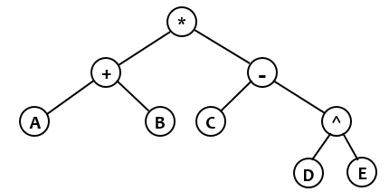

Với mọi biểu thức số học gồm 5 phép toán hai ngôi +, -, *, /, ^, ta có thể xây dựng một cây nhị phân tương ứng. Ví dụ với biểu thức hậu tố: A B + C D E ^ - * thì cây nhị phân tương ứng là như sau:

Yêu cầu: cho một biểu thức hậu tố, hãy xây dựng cây nhị phân tương ứng và tính chiều cao của cây.
Dữ liệu nhập:
- Là chuỗi biểu diễn biểu thức hậu tố gồm số hạng là các chữ cái latinh viết hoa và 5 phép toán +,-,*,/,^. Chiều dài tối đa của chuỗi là 1000. Giữa hai số hạng, hoặc giữa hai phép toán, hoặc giữa số hạng và phép toán, cách nhau một khoảng trắng. Ngoài ra không có ký tự khác. Dữ liệu cho đảm bảo biểu thức hậu tố là hợp lệ.
Dữ liệu xuất:
- Là số nguyên xác định chiều cao của cây nhị phân tương ứng.